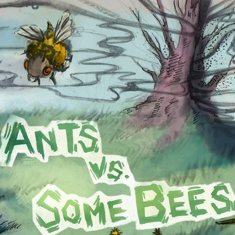
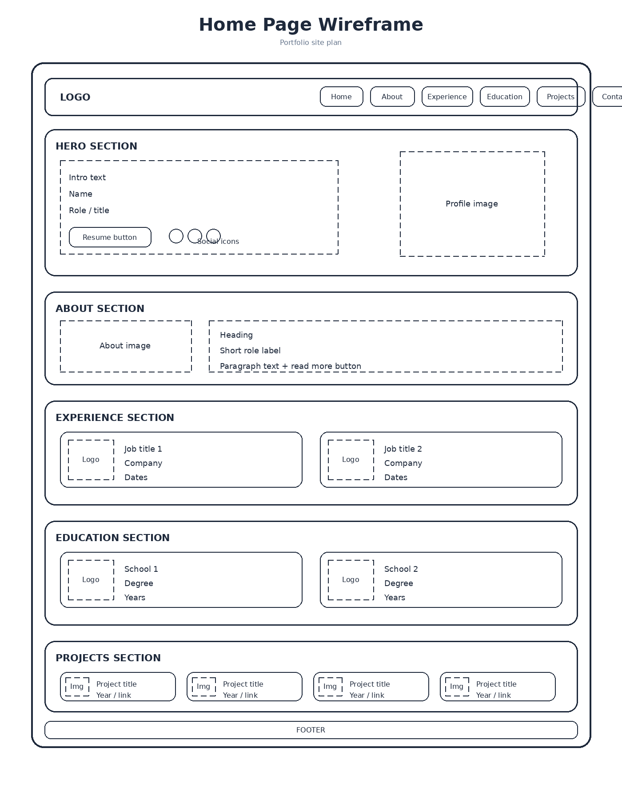
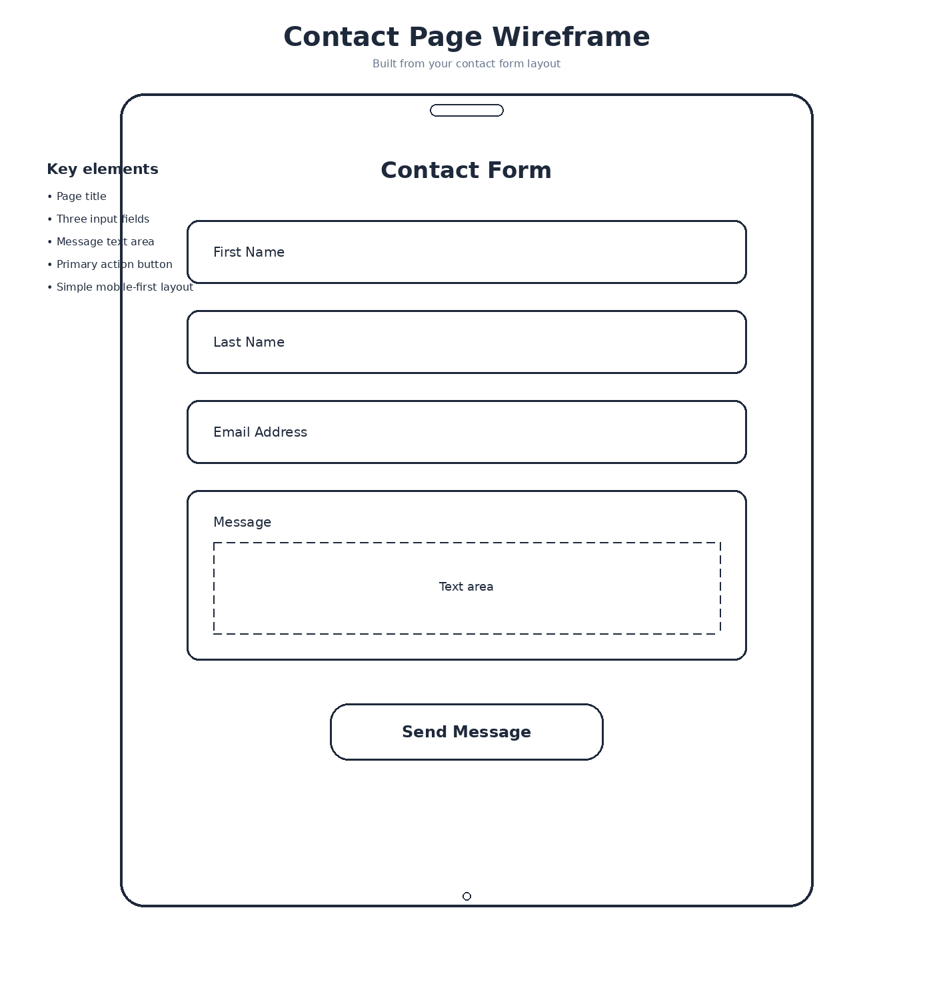

Purpose and Audience
This website will serve as a personal portfolio that introduces who I am, highlights my education and experience, and showcases my programming projects and technical skills. It is meant to help me present myself professionally to recruiters, employers, professors, and others who want to learn more about my work.
My main audience is recruiters and employers looking for software engineering or development candidates. A second audience includes classmates, professors, and professional connections who may want to view my background, experience, and completed projects.
Dynamic Elements
JavaScript will be used to add interactivity and improve the user experience throughout the site. This includes a responsive navigation menu for smaller screens, smooth interaction when users move through the site, and a contact form with validation to help make sure information is entered correctly. JavaScript may also be used to make project cards more interactive by showing extra details or links when users click on them.
Logo
The site will use a simple text-based logo that matches the clean and professional style of the portfolio. The logo will display the name “Personal Portfolio.” in a clear format that fits the overall theme of the site.
Colors and Fonts
Color Palette:
#1D3557
#457B9D
#A8DADC
#F8F9FA
Fonts:
- Nunito (Headings)
- Nunito (Body)
Content
Home Page
Hero Section:
- Hi, I am James Strobel I’m a Software Engineer
- Button: My Resume
Social Links:
- GitHub
About Section:
I am a Computer Science student at Brigham Young University with a strong passion for software development and engineering. My goal is to combine my academic knowledge and technical skills with practical, real-world applications, focusing on software engineering, mobile app development, and system design. I am eager to engage in innovative projects where I can collaborate with diverse teams, learn from experienced professionals, and contribute to meaningful technological advancements. I am open to opportunities that allow me to apply my skills in problem-solving, coding, and development while continuing to grow and evolve as a professional in the tech industry.
Experience Section:
- Software Engineer Intern – Envelope (YC S23), Mar 2024 – Jun 2024
- Database Assistant – Teton Radiology, Aug 2019 – Mar 2022
Education Section:
- Brigham Young University – BS, Computer Science (2022–2024)
- Brigham Young University-Idaho – BS, Computer Science (2024–2026)
Projects Section:
- Scheme Interpreter (2023)
- Ants Tower Defense (2023)
- AWS Hosted Portfolio (2024)
- Dynamic Frequency Harmonizer (2024)
Contact Page
Contact Form:
- First Name input field
- Last Name input field
- Email Address input field
- Message text box
- Send Message button
Navigation
- Home
- About
- Experience
- Education
- Projects
- Template
- Contact
Footer:
© 2026 James Strobel. All rights reserved.
Images and Graphics




Wireframes
Home Page

Navigation/Menu and Logo → Hero Section → About Preview → Experience → Education → Projects
Contact Page

Page Title → Contact Information Grid → Send Message Form